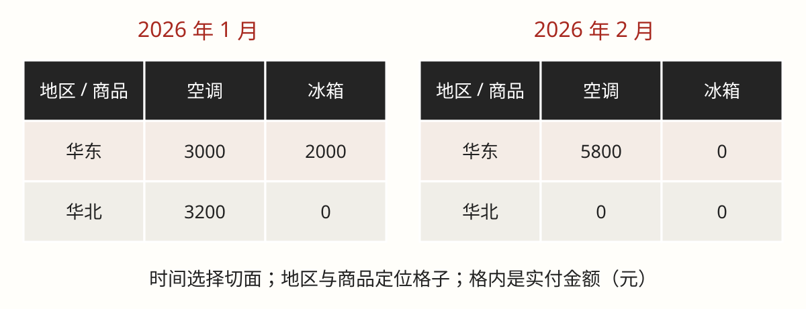

面向主题
按销售主题组织日期、地区与商品
四条订单明细按地区与月份汇总成销售报表
 VER. 2608
Built with impress.js
VER. 2608
Built with impress.js
同一组订单事实经过规范化与汇总，形成不同角度的销售报表
交易处理与历史分析具有不同访问需求，可在同一系统中分工
| 事项 | 联机事务处理 OLTP | 联机分析处理 OLAP |
|---|---|---|
| 具体任务 | 提交 O100 的两条明细 | 按月份、地区、商品统计金额 |
| 主要操作 | 核验库存并原子提交 | 扫描、连接、分组与求和 |
| 响应要求 | 控制提交延迟与并发冲突 | 在约定时间交付分析结果 |
| 正确性要求 | 事务范围与业务约束 | 一致视图、口径与完整数据范围 |
报表可有约定的刷新延迟，结果仍须一致；两类负载的资源竞争须受控
完整模拟样本：每行一条订单商品明细；实付单位元，暂不含退款
| 订单 / 行 | 日期 | 地区键 | 商品键 | 数量 | 实付元 |
|---|---|---|---|---|---|
| O100 / 1 | 2026-01-10 | R1 | P01 | 1 | 3000 |
| O100 / 2 | 2026-01-10 | R1 | P02 | 1 | 2000 |
| O101 / 1 | 2026-01-20 | R2 | P01 | 1 | 3200 |
| O102 / 1 | 2026-02-05 | R1 | P01 | 2 | 5800 |
R1=华东，R2=华北；P01=空调，P02=冰箱；总实付 14000 元
来源 B 的记录 501/1 对应 O101/1，转换过程保留来源与规则
| 来源记录 | 规范结果 |
|---|---|
| 金额 0.32，单位万元 | 实付金额 3200，单位元 |
| 日期 20/01/2026，格式日/月/年 | 日期键 2026-01-20 |
| 来源商品码 AC-01 | 按映射表转换为 P01 |
| 来源系统 B，记录 501/1 | 保留来源标识，对应 O101/1 |
未知单位或缺失商品映射须报错或隔离；转换使用原单位和明确映射
本例保留来源记录，完成清洗与转换后装入规范事实表
ETL 常将清洗并入转换；ELT 先装原始数据再转换，规范事实须经检查
本例以来源系统＋来源记录号识别重复，正式事实有订单行唯一键
| 操作 | 正确结果 |
|---|---|
| 首次装入四条明细 | 4 行，实付合计 14000 |
| 原样重跑同一批 | 仍为 4 行、14000 |
| 同一来源编号出现不同金额 | 按更正版本与冲突规则处理 |
| 缺失单位或无法匹配商品 | 隔离并反馈，暂不进入规范汇总 |
同一来源身份用于识别重复；内容改动可能是原事实的更正，须核对版本
教材的“不可更新”指分析用户以查询为主；仓库维护仍受控进行
按销售主题组织日期、地区与商品
统一跨来源的单位、日期和编码
查询为主，装载、更正与重算受控
保留各时期事实及必要版本；按既定策略归档或清理
新增时期、纠错与重算可能改变仓库，须记录来源、版本与统计定义
当前/早期描述历史时期，轻度/高度综合描述汇总程度
| 层次 | 本例一行代表什么 | 能回答什么 |
|---|---|---|
| 当前或早期细节 | 一张订单的一条商品明细 | 追查 O100/1 的实付 3000 |
| 日汇总 | 日期×地区×商品 | 查询该日实付合计 |
| 月汇总 | 月份×地区×商品 | 每月各地区商品销售 |
| 更粗汇总 | 月份 | 1 月 8200，2 月 5800 |
同一事实表保持一致粒度；明细与月汇总混算会重复计入销售额
O100 有两行，订单标识与明细行标识要分开计数
| 统计问题 | 算法 | 本例结果 |
|---|---|---|
| 明细行数 | COUNT(*) | 4 |
| 不同订单数 | COUNT(DISTINCT OrderId) | 3 |
| 1 月不同订单数 | 筛选 1 月后去重订单号 | 2 |
| 1 月两种商品的订单数相加 | 空调 2＋冰箱 1 | 3（有重复） |
O100 在空调和冰箱组各计一次；跨商品统计订单数须重新去重
五层按职责划分，可组合部署在同一系统中
| 环节 | 交付物 |
|---|---|
| 业务源 | 已提交的订单行与来源标识 |
| 集成处理 | 统一单位、键、日期的规范记录 |
| 仓库 | 可追查明细及相应汇总 |
| OLAP 层 | 按月份、地区和商品形成分析结果 |
| 前台报表 | 显示金额、计算规则和数据截至时间 |
仓库完整装入至 10:00，报表不含 10:03 新提交的订单
同一立方体：月份×地区×商品，单元格保存实付金额

完整样本中无对应事实的格子显示 0；数据未到齐时，应标记未知
切片固定一个维度值，切块限定多个维度；原始销售记录保持不变
| 操作 | 筛选条件 | 留下的金额 |
|---|---|---|
| 切片 Slice | 地区固定为华东 | 3000、2000、5800 |
| 切块 Dice | 华东＋空调＋2026 年 1—2 月 | 3000、5800 |
| 再限定月份 | 上述条件再取 1 月 | 3000 |
筛选确定事实范围，输出可保留明细或另行汇总
先对商品求和，再交换月份与地区的行列；总实付仍为 14000
| 月份 | 华东 | 华北 | 月合计 |
|---|---|---|---|
| 1 月 | 5000 | 3200 | 8200 |
| 2 月 | 5800 | 0 | 5800 |
| 地区 | 1 月 | 2 月 |
|---|---|---|
| 华东 | 5000 | 5800 |
| 华北 | 3200 | 0 |
本例金额可按日到月、按商品到全部商品求和
| 层级或范围 | 计算 | 结果 |
|---|---|---|
| 1 月 10 日全部商品 | 3000+2000 | 5000 |
| 1 月 20 日全部商品 | 3200 | 3200 |
| 1 月上卷汇总 | 5000+3200 | 8200 |
| 1—2 月合计 | 8200+5800 | 14000 |
日→月→季度→年与日→周是两条层级；跨月周的金额须按日期归入各月
1 月 8200 可展开到已保留的粒度；订单明细还须有可追查的关联
| 已保存的数据 | 可以查看 | 不能仅凭它恢复 |
|---|---|---|
| 只有月合计 8200 | 1 月总额 | 每天各卖多少 |
| 有日汇总 5000/3200 | 1 月 10 日与 20 日 | 每张订单的每条商品 |
| 有四条原始明细及关联键 | 追查 O100/1=3000 | 未保存过的字段 |
月→日是维度下钻；经关联键查看订单行称为明细穿透 Drill-through
只取 P01 空调：共 4 件，实付金额 12000 元
| 订单行 | 数量 | 实付 | 该行单价 |
|---|---|---|---|
| O100/1 | 1 | 3000 | 3000 |
| O101/1 | 1 | 3200 | 3200 |
| O102/1 | 2 | 5800 | 2900 |
按件平均单价=12000/4=3000；直接平均 3000、3200、2900 会得到约 3033.33，权重不同
存储组织服务同一分析定义，关系表与多维结构承担不同工作
| 路线 | 本例可能的组织 | 需要维护 |
|---|---|---|
| 多维 MOLAP | 按多维结构组织月份/地区/商品金额 | 预计算、空间与刷新 |
| 关系 ROLAP | 事实表＋维度表，用 SQL 连接分组 | 连接与聚合优化 |
| 混合 HOLAP | 关系表存明细，多维结构存部分汇总 | 两种表示的一致版本 |
立方体提供多维分析视图；物理存储可采用不同结构，并省略空组合
星型 Star schema 以维度键解释每条订单行的日期、地区与商品
01
02
03
04
05Sales(OrderId, LineNo, DateKey, RegionKey,
ProductKey, Qty, PaidYuan)
DateDim(DateKey, Month, Quarter, Year)
RegionDim(RegionKey, RegionName)
ProductDim(ProductKey, ProductName, Category)R1 连接华东，P01 连接空调；维度键须唯一，重复键可能放大事实行数
雪花 Snowflake schema 拆分维度层级；四条销售事实与总额保持不变
| 方案 | 从事实到商品类别的路径 |
|---|---|
| 星型 | Sales→ProductDim，表内直接保存类别名 |
| 雪花 | Sales→ProductDim→CategoryDim |
| 拆分的收益 | 类别说明可集中维护 |
| 新增的工作 | 需要额外连接和正确的键关系 |
星型与雪花是关系模式的组织方式，属于 OLAP 实现中的表结构选择
每个报表金额对应具体事实、汇总范围、计算规则和数据版本
统一单位，重复装载不增加行数
明细 4 行、订单 3 张，跨商品去重
旋转只换行列，月度金额保持不变
下钻使用已存细节，均价按件数加权
第 16.2 节研究刷新延迟与资源隔离，沿用已确定的粒度和统计规则